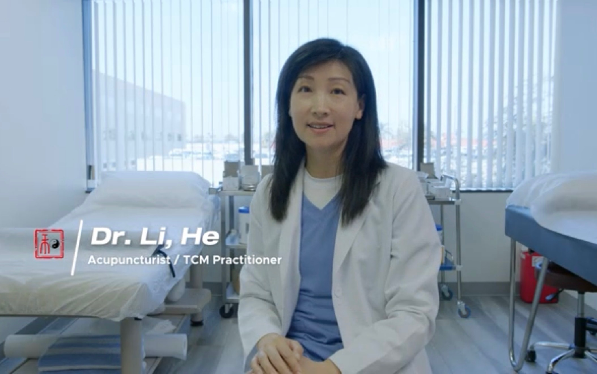

Patient & Practitioner Perspectives
In this video, Dr. He (Annie) Li speaks in English about her journey from practicing as an OB/GYN physician in China to becoming a licensed acupuncturist and Doctor of Acupuncture and Integrative Medicine in Southern California.
She shares her philosophy of patient-centered care, how she combines Western medical knowledge with Traditional Chinese Medicine, and what patients can expect at Ander Acupuncture and Herbs.
李医生 (He Annie Li) 以中文分享她的行医经历和治疗理念。她结合中医传统与现代西方医学，为患者提供全面、个性化的医疗方案。
本视频适合更喜欢以中文了解诊所信息的患者。诊所提供中英双语服务。
A visual tour of the clinic — our calming treatment rooms, herbal dispensary, and the warm, welcoming environment we've created for every patient who walks through our doors.
The clinic is designed with simplicity, cleanliness, and warmth in mind — incorporating subtle Chinese elements and calming greenery to help you slow down and feel at ease from the moment you arrive.
Dr. Li accepts patients by appointment. Contact us in English or Chinese.
Book an Appointment (657) 221-0331